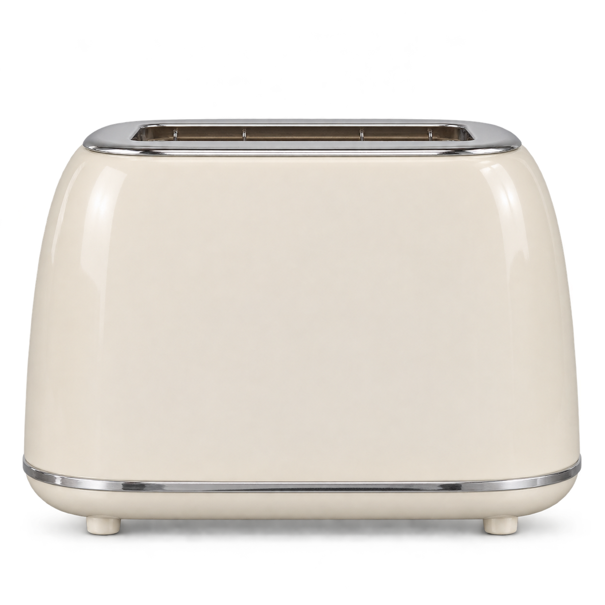

A Pop-up Toaster
Insert a slice. Find your shade. Press the lever and take out your toast.
Idleheating off

- Idle
- Ready
- Toasting
- Done
- Cancelled
01 Bread
02 Browning
Selected level
Click the brown knob to change level: 1 → 5 → 1.
03 Timer
TIME REMAINING
00sec
- 016 seconds
- 029 seconds
- 0312 seconds
- 0415 seconds
- 0518 seconds